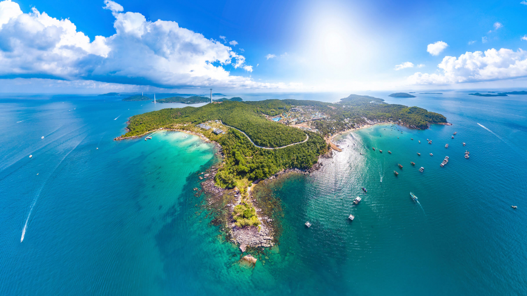

Discover the Hidden Jewel of Vietnam.
Explore Phú Quốc!
Phú Quốc, a serene Vietnamese island nestled in the Gulf of Thailand, lies just off the coast of Cambodia. Renowned for its pristine white-sand beaches, the island is a haven for visitors seeking both relaxation and adventure. The southwest coast, adorned with swaying palm trees, hosts an array of resorts that blend seamlessly with the natural beauty. Beyond its coastal allure, over half of Phú Quốc is dedicated to the Phú Quốc National Park, a vast expanse of protected land that boasts rugged mountains, lush tropical jungles, and an extensive network of hiking trails teeming with diverse wildlife. Duong Dong, the island's bustling heart, offers a glimpse into local life with its vibrant day and night markets. Here, visitors can explore stalls filled with handmade crafts, fresh produce, and an impressive selection of seafood, capturing the essence of island life in every sense.
Discover More Read Island StoriesIsland Highlights
An Thoi Archipelago
Dive into the An Thoi Archipelago to uncover a world of underwater marvels. This pristine cluster of islands offers some of the best snorkeling and diving experiences in Phú Quốc, with vibrant coral reefs teeming with marine life. From the dazzling colors of tropical fish to the serene beauty of underwater landscapes, An Thoi is a paradise for those seeking to explore the mysteries of the ocean.
Grand World
Grand World Phú Quốc is a large entertainment and shopping area in the Bai Dai Area, part of the Phú Quốc United Center. Opened in 2020, it quickly became a must-visit spot on the island. Covering 85 hectares, its beautiful buildings are inspired by European cities. Visitors love the colorful architecture and lively shopping streets, making it a top attraction in Phú Quốc.